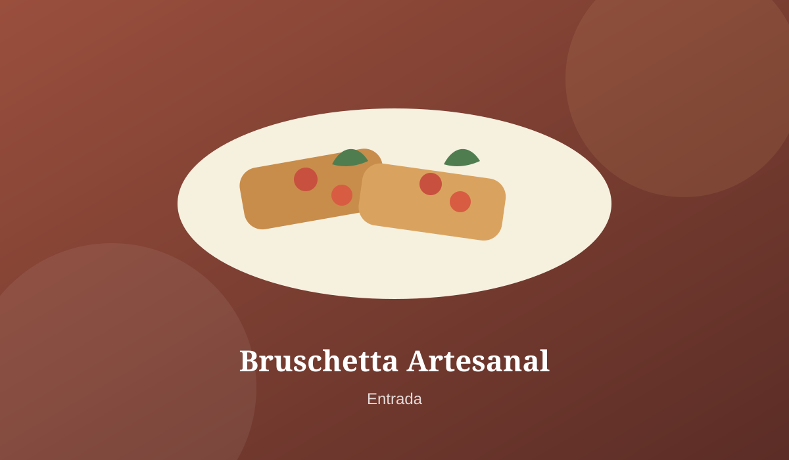

Bruschetta Artesanal
R$ 24,90Pão italiano tostado com tomate, manjericão fresco, alho e azeite extravirgem.
RESTAURANTE FICTÍCIO
Um menu simples, elegante e inspirado em ingredientes brasileiros, reunindo entradas, pratos principais e sobremesas.
Ver menuSOBRE
O Sabores da Floresta é um restaurante fictício criado para esta atividade acadêmica. O projeto demonstra o uso de HTML para estruturar o conteúdo e CSS para criar identidade visual, organização, responsividade e consistência entre os elementos.